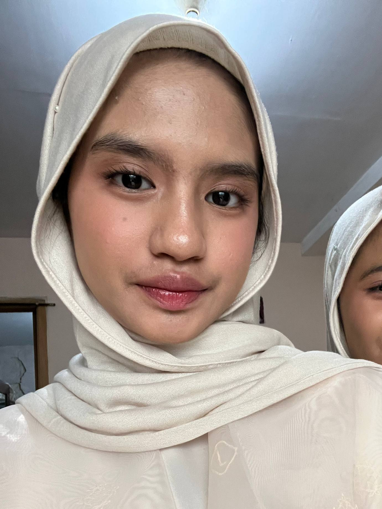

The Real Version of Me

Aliya Hasna
Hai semua! Perkenalkan, namaku Aliya Hasna Althafunnisa, biasanya aku dipanggil Aliya. Saat ini aku berada di kelas 9 An-Nasr. Aku lahir di Jakarta, pada tanggal 26 Oktober 2010, dan sekarang aku berusia 15 tahun. Semoga lewat perkenalan singkat ini, kamu bisa lebih mengenal aku dengan baik.
Aku merupakan pribadi yang suka mengetahui hal-hal baru terutama di bidang kesehatan. Aku sangat menikmati waktu luangku untuk mendengarkan musik, menonton film, dan bermain game.
AKu sangat tertarik pada bidang kesehatan. Di waktu luang, aku suka mendengarkan musik dan bermain game. Aku memiliki bakat untuk mengahafal sesuatu dengan cepat.
Cita-citaku adalah menjadi Dokter Anak atau Diplomat. Harapanku semoga aku bisa terus berkembang menjadi lebih baik dari sekarang.
Selama aku belajar di SMPIT Al Haraki, terutama di kelas IX, memberikan banyak pelajaran kepadaku, terutama pada cara mengatur waktu dengan baik supaya semua kegiatan di kelas IX dapat diselesaikan dengan baik.